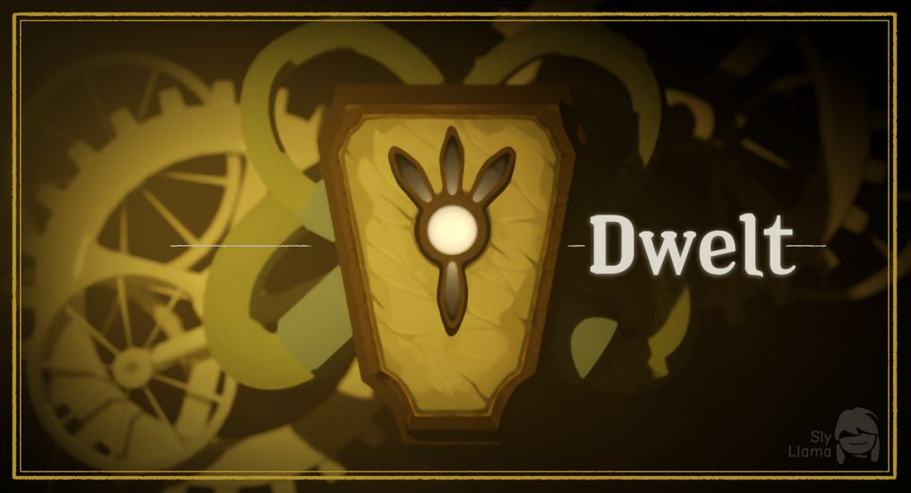
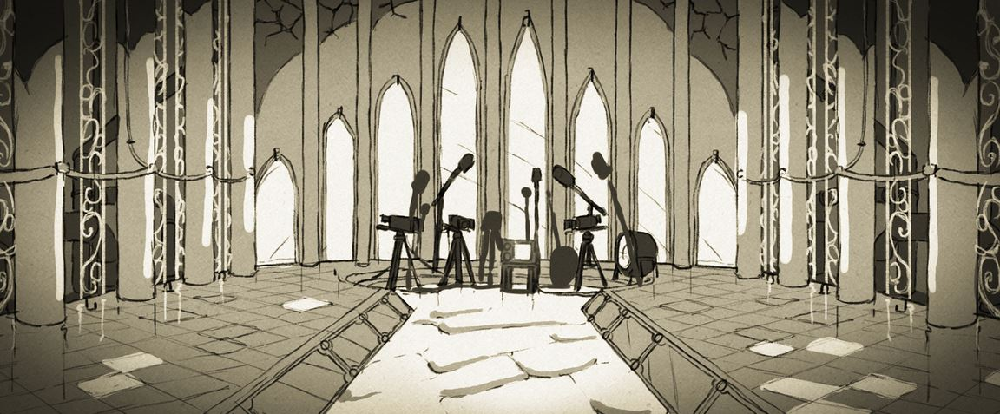
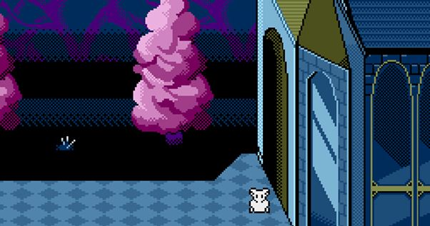
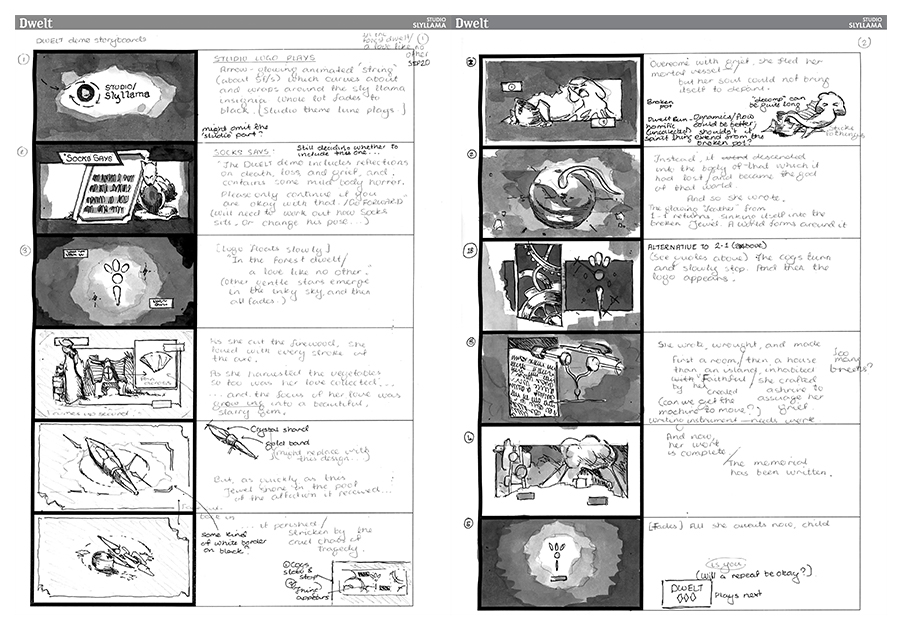
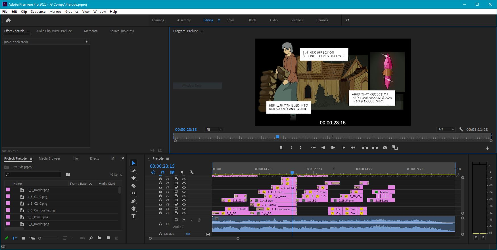
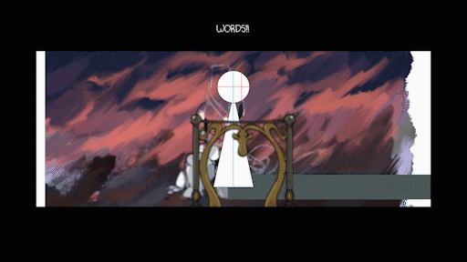

The Development of Dwelt
October 2020
Every story needs to be shared through a medium; but choosing that type of media can be really hard when you’ve struggled to find an affinity or loyalty to any single one. “Do I make an animation? Comic? Video game? What would I be decent at, and to which form might my narrative be best suited?” That’s the position I’ve been in for a while now, and it’s an interesting story that I’d like to share: my eight months of trying to produce a game called Dwelt.

The original banner produced for the game. The frame was actually part of a short animated sequence: the gears in the background would rotate, with the whole video looping continuously.
Beginnings
I was finishing up at school with a collection of half-baked concepts that I’d hoped to explore one day, and one was pressing especially strongly on my mind: the story of a parent who had lost a child and who needed to share those memories with an audience. In drawing the participant into their paralysed world, they would begin to project an idealised reality that became more and more twisted and detached, until the viewer finally shattered these false images and helped this character come to terms with their loss. It’s a narrative that I believe would suit many sequential forms of art, but having just played Undertale for the first time around that period, I was captivated by the emotional power of games (even though I’d had no experience with them), and wanted to produce one for myself. It didn’t help that I’d already been working on a graphic novel for a year under academic pressures and was becoming frayed and disillusioned with the whole idea!

One of the earlier concept artworks. I really loved this idea that the parent was watching you through these cameras and microphones to see whether you were appreciating the memories that they had shared with you.
So I submitted my school project in February, took some time off to get used to working life, and by April I had my first concept and portion of gameplay. As I wrote in my log at the time, “Dwelt opens up an opportunity to combine visuals, dialogue, music, and mechanics to shape these places, and to finally give them life. The modest practical scope of the game also makes it an achievable first step in game development.” (Spoiler: it wasn’t practical.) Inspired by Myst and Riven, I’d built the first room (a chapel, or shrine) through which the player could navigate using a frame-based point-and-click perspective, as well as an opening cinematic. And that was my first big mistake! I’d set about building these final assets without having any idea about how the story would progress. Once I hit my first major thematic road-block, lacking any kind of plan I gave up in frustration.
Another go at it

This was an exciting moment, as it represented the first time the world of Dwelt was expressed in a truly explorable way.
I ended up taking about three months off following that disappointment. After taking care of other things for a while, I wrote that “the scope of the game, in its current state, is too large”; and having this belief in writing gave me a lot of freedom to acknowledge that I was only one person trying to wear many hats, and that I could really slim the game down to its essentials. With a new sense of excitement, I turned to pixel art and more conventional means of rendering RPGs (though the game was never intended to be one)… and ended up doing exactly the same thing again. I made art, music, and game-play for the very first scene, and realised that I still had nothing! What’s more, I felt that I was in danger of losing many of the nuances of my narrative in favour of copying things that had already been done. It wasn’t a great place to be in, but I’d managed to develop a demonstration of a navigable world that felt alive to me, and that supplied me with a decent boost!

For the first time, absolutely everything was story-boarded.
The way forward
It didn’t take quite so long for me to pick myself up this time, and I’d finally learnt that I needed to make a plan if I was going to succeed in this endeavour. Using plain paper I wrote out the full story, tweaking things as I went along. Once I was happy with the overall structure of the story, I drew each scene in story-board form, writing out captions for plot developments, dialogue, game mechanics, and other details. Things went really well from there for a while. I’d learnt a lot about the engine I was using, Godot, from all of my previous experiences, and I found that both the 2D and 3D scenes were coming together nicely. I had a design document and many left-over musical ideas I could incorporate into the game, as well as a lot of help with character designs. Things seemed very much under control.

Using Premiere Pro to create cinematics for the beginning of the game – a little like an animated comic!

A test for one of Dwelt’s two-dimensional scenes, featuring parallax effects and colour shaders.
But what’s next?
The problem is that making a game as a party of one takes a lot more more than just focus and energy. Not only do you have to create all of the game’s assets, scenes, and story points and understand the relationship between them (both as works-in-progress and final products), those products and relationships have to then be continuously maintained, even as the scope and complexity of the project’s structure grows and grows.
I’ve realised that it’s hard to find the moments of simple focus – of being “in the zone” – that were easier to come by when creating things in other media. When I was working on the comic Stellaris, I found that I could spend some time writing out the script and thumbnailing my pages, and then settle into long, satisfying periods of sketching and inking with relaxing music, friends to chat with, and a good cup of coffee. There’s been no such solace for me in game development; I find myself constantly switching between macro-tasks and fretting over how my current job will fit into the wider arc of the project. At the very least I’ve gained more of an appreciation for project managers, coordinators, and art directors!
Dwelt is something that I would love to work on and complete with the help of a small group of people, but there are two things you need before you have a team: self-confidence, and a team – and proof that you have something worthy of the attention, effort, and time of others. Wait, that’s three things. Oh well! If evolution is a chain, then a studio would be many, many links down the line.
But, in the place I’m at now – with the limited energy, time, and self-esteem that I have available – I can’t help but wonder whether Dwelt needs to take a different form at this time in life. I think that it is more important that it is expressed and finished than that it is perfect. If no single form of media holds one’s loyalty (or self-confidence in that medium), then every medium becomes available. There are a couple of small projects I would like to play with and complete before the end of 2020, but Dwelt remains very much on my mind. And I hope that it can find its home, whatever that may be.